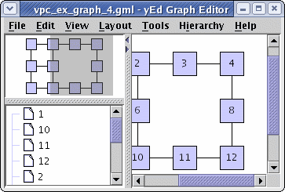
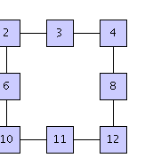
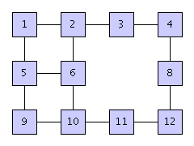

| Exporting a Graph's Visual Representation | ||
|---|---|---|
| Prev | Chapter 9. Input and Output | Next |
By default, the yFiles library already offers various possibilities for writing a graph (or more precisely, a graph's visual representation) to different graphic file formats. Table 9.21, “Supported image file formats” lists the supported graph export file formats.
Both exporting to stand-alone image files, as well as generating HTML-suited versions, i.e., tiled images or image maps is possible. Furthermore, tiled images can optionally be wrapped in HTML tables.
Table 9.21. Supported image file formats
| File Name Extension | Format Name | Description |
|---|---|---|
| gif | Graphics Interchange Format | Bitmap graphics file format. |
| jpg | Joint Photographic Experts Group | Bitmap graphics file format. |
| png | Portable Network Graphics |
Bitmap graphics file format.
Accessible via ImageIoOutputHandler |
| html | HyperText Markup Language | Serves as a container for both tiled images and image maps. |
Table 9.22, “Supported vector graphics file formats” lists further graph export file formats that are provided by yFiles extension packages.
Table 9.22. Supported vector graphics file formats
| File Name Extension | Format Name | Description |
|---|---|---|
| svg, svgz | Scalable Vector Graphics | XML-based file format. |
| Portable Document Format | Desktop publishing file format for representing documents in a device independent and display resolution independent way. | |
| swf | Shockwave Flash | Vector graphics file format for publishing multimedia contents on the Web. |
| emf | Enhanced Windows Metafile | Vector graphics file format on Microsoft®Windows® systems. |
| eps | Encapsulated PostScript | PostScript® document with additional restrictions that describes an image or drawing. |
The base class for all image export is abstract class
ImageOutputHandler .
It has methods from its direct superclass IOHandler that are related to file
input disabled (they return either false or throw "Unsupported
Operation" exception).
.
It has methods from its direct superclass IOHandler that are related to file
input disabled (they return either false or throw "Unsupported
Operation" exception).
File output, i.e., the actual process of exporting a Graph2D to an image is implemented as two steps:
When rendering the graph to an image, the GraphicsContext instance that is
set as a rendering hint with the
java.awt.Graphics2D object reflects the current
rendering context accordingly, i.e., invoking the instance's
isExportPainting() method
will yield true.
method
will yield true.
Also, rendering hints that control aspects of the rendering process of the view, like, e.g., whether the state labels of group nodes should be painted, will be honored, too.
The following methods represent the two steps. They are defined abstract, so descendants of class ImageOutputHandler have to implement them appropriately:
protected abstract BufferedImage createImage(int width, int height) |
|
| Description | Abstract methods from class ImageOutputHandler. |
For situations where no proper Graph2DView is associated with a Graph2D object, class ImageOutputHandler offers the possibility to create a default Graph2DView object. Subsequently, this view can be registered with the graph as the current view, and be used to render the image. Note that this process is also triggered whenever an ImageOutputHandler encounters a graph that lacks a current view.
As a further option, ImageOutputHandler also provides for anti-aliasing with image export.
Before a graph's visual representation can be exported to an image file, it has
to be properly prepared.
Preparation of a Graph2D means setting up
the current view, more precisely, the instance of type
Graph2DView
means setting up
the current view, more precisely, the instance of type
Graph2DView that contains the graph.
that contains the graph.
This Graph2DView object determines the width and height of the image, the graph's clipping that is to be exported, and also its zoom level. Further settings influence the level of detail that is to be shown on the resulting image, i.e., if, among other things, there should be labels or not. Moreover, anything that is displayed in this view, for example a background image, can be exported to the file, too.
Setting up a view can be done in several ways, either
Example 9.26. Directly setting up a view for image export
void configureView(Graph2DView view)
{
Graph2D graph = view.getGraph2D();
Rectangle box = graph.getBoundingBox();
Dimension dim = box.getSize();
// Set the view's width and height, in turn this also sets the image's size.
view.setSize(dim);
// The clipping should show the entire graph. (The graph's bounding is a
// little enlarged.)
view.zoomToArea(box.getX() - 10, box.getY() - 10,
box.getWidth() + 20, box.getHeight() + 20);
// Set the detail threshold so that it is never switched to less detail mode.
view.setPaintDetailThreshold(0.0);
}
Class ViewPortConfigurator is a convenience that can be used to set up a view. It supports common scenarios for image export, for example, exporting the entire graph or only that part of a graph that can be seen in its current view. In addition, it offers functionality for adjusting the size of an image, for example, it allows to automatically adjust the height of an image given the desired width and the graph's scaling factor. The results when using ViewPortConfigurator for the two main setup scenarios for image export are depicted in Figure 9.6, “Clipping scenarios with class ViewPortConfigurator”.
Figure 9.6. Clipping scenarios with class ViewPortConfigurator
|

|
| Application window showing the original view together with its graph. |
|

|

|
|
Resulting image when only the visible part from the Graph2DView containing the
graph is being exported using
CLIP_VIEW |
Resulting image when the complete graph is being exported using
CLIP_GRAPH |
Example 9.27, “Using class ViewPortConfigurator to set up a view for image export” shows how to configure a view using class ViewPortConfigurator. Except for image size and graph clipping all configurator settings are left to their respective default values, i.e., a zoom level of 100%, and an additional margin of 15 pixels around the bounding box of the graph is used to set up the view.
Example 9.27. Using class ViewPortConfigurator to set up a view for image export
void configureExportView(Graph2DView exportView)
{
ViewPortConfigurator vpc = new ViewPortConfigurator();
// Register the graph to be exported with the configurator instance.
// Depending on the other settings (see below) the graph will be used to
// determine the image size, for example.
vpc.setGraph2D(exportView.getGraph2D());
// The complete graph should be exported, hence set the clipping type
// accordingly.
vpc.setClipType(ViewPortConfigurator.CLIP_GRAPH);
// The graph's bounding box should determine the size of the image.
vpc.setSizeType(ViewPortConfigurator.SIZE_USE_ORIGINAL);
// Configure the export view using mainly default values, i.e., zoom level
// 100%, and 15 pixel margin around the graph's bounding box.
vpc.configure(exportView);
}
A convenient technique to prepare a Graph2D instance for image export whenever its current view cannot be modified, because
is to temporarily replace the currently active Graph2DView instance with a newly created one. This dedicated "export" view is then configured and used to write out the image, and afterwards the original Graph2DView instance is restored. The methods in Example 9.28, “Using a dedicated "export" view” demonstrate how to do the replacing and restoring.
Example 9.28. Using a dedicated "export" view
Graph2DView replaceCurrentWithExportView(Graph2D graph, ImageOutputHandler ioh)
{
// Save the currently active view.
Graph2DView originalView = (Graph2DView)graph.getCurrentView();
// Create a new Graph2DView instance with the graph. This will be the
// dedicated view for image export.
Graph2DView exportView = ioh.createDefaultGraph2DView(graph);
// Use the Graph2DRenderer instance of the currently active view. (Optional.)
exportView.setGraph2DRenderer(originalView.getGraph2DRenderer());
// Use the rendering hints of the currently active view. (Optional.)
exportView.setRenderingHints(originalView.getRenderingHints());
// Replace the currently active view containing the graph with the "export"
// view.
graph.setCurrentView(exportView);
return originalView;
}
void restoreOriginalView(Graph2D graph, Graph2DView originalView)
{
// Remove the "export" view from the graph.
graph.removeView(graph.getCurrentView());
// Reset the current view to the originally active view.
graph.setCurrentView(originalView);
}
Using method replaceCurrentWithExportView(Graph2D, ImageOutputHandler) from
Example 9.28, “Using a dedicated "export" view” with an ImageOutputHandler of type
GIFIOHandler will result in a transparent
background for the generated images.
This is the default behavior of method
createDefaultGraph2DView(Graph2D)
will result in a transparent
background for the generated images.
This is the default behavior of method
createDefaultGraph2DView(Graph2D) from class GIFIOHandler.
from class GIFIOHandler.
Setting a Graph2DRenderer on the export
view is only necessary when the Graph2DRenderer used with the original view is
a specialized class that provides custom behavior.
on the export
view is only necessary when the Graph2DRenderer used with the original view is
a specialized class that provides custom behavior.
In the second step of exporting a Graph2D to an image file, the actual encoding
is done.
Classes GIFIOHandler and
JPGIOHandler
and
JPGIOHandler are responsible for encoding
the already rendered image to GIF and JPG file format, respectively.
are responsible for encoding
the already rendered image to GIF and JPG file format, respectively.
As a single possibility of control, class JPGIOHandler offers a setter method
to define the encoding quality.
The other thing to observe with class GIFIOHandler is its
createDefaultGraph2DView(Graph2D) method.
By default, this method sets a transparent background to be used for image
generation;
Example 9.29, “Resetting the default background renderer for a Graph2DView instance” shows how to circumvent this behavior easily.
(One occasion for resetting the background renderer would be right after the
call to the aforementioned method.)
method.
By default, this method sets a transparent background to be used for image
generation;
Example 9.29, “Resetting the default background renderer for a Graph2DView instance” shows how to circumvent this behavior easily.
(One occasion for resetting the background renderer would be right after the
call to the aforementioned method.)
Example 9.29. Resetting the default background renderer for a Graph2DView instance
// 'exportView' is of type y.view.Graph2DView. exportView.setBackgroundRenderer(new DefaultBackgroundRenderer(exportView));
The code fragment in Example 9.30, “Creating an ImageOutputHandler” shows how to instantiate the actual descendants of ImageOutputHandler for exporting a Graph2D to an image. And Example 9.31, “Exporting a Graph2D object as an image” summarizes all necessary steps for image export in their natural order.
Example 9.30. Creating an ImageOutputHandler
// 'ioh' is of type y.io.ImageOutputHandler.
// Create the proper ImageOutputHandler for image generation.
if (exportAsGIF) {
// Either GIF...
ioh = new GIFIOHandler();
}
else {
// ... or JPG file format.
ioh = new JPGIOHandler();
// Set the image quality to 90%. This yields a good compromise between small
// file size and high quality.
((JPGIOHandler)ioh).setQuality(0.9f);
}
// Write the generated image to a file.
String ext = ioh.getFileNameExtension();
// Mind the dot! It is not part of the actual file name extension...
exportGraphToImageFileFormat(graph, ioh, "My" + ext.toUpperCase() + "." + ext);
Example 9.31. Exporting a Graph2D object as an image
void exportGraphToImageFileFormat(Graph2D graph, ImageOutputHandler ioh,
String outFile)
{
Graph2DView originalView = replaceCurrentWithExportView(graph, ioh);
configureExportView((Graph2DView)graph.getCurrentView());
writeGraphToFile(graph, ioh, outFile);
restoreOriginalView(graph, originalView);
}
Class ImageIoOutputHandler can be used in
the second step of exporting a Graph2D to an image file.
It serves as an adapter to so-called image writers that are registered with the
Java Image I/O API.
Out of the box, J2SE 1.4 supports PNG (Portable Network Graphics) as an
additional image file format.
J2SE 5.0 adds BMP file format, a bitmap graphics file format popular on the
Microsoft Windows platform.
can be used in
the second step of exporting a Graph2D to an image file.
It serves as an adapter to so-called image writers that are registered with the
Java Image I/O API.
Out of the box, J2SE 1.4 supports PNG (Portable Network Graphics) as an
additional image file format.
J2SE 5.0 adds BMP file format, a bitmap graphics file format popular on the
Microsoft Windows platform.
The central class of Java Image I/O API is javax.imageio.ImageIO. It offers several static methods that allow to query and to retrieve available image writers. Example 9.32, “Creating a PNG image output handler” demonstrates the use of ImageIO to create an ImageOutputHandler object that provides for PNG image exporting.
Example 9.32. Creating a PNG image output handler
ImageOutputHandler createPNGOutputHandler()
{
// Use the services of Java Image I/O API to see whether there is an image
// writer registered that is capable of writing the PNG graphics file format.
Iterator it = ImageIO.getImageWritersBySuffix("png");
ImageWriter iw = (ImageWriter)(it.hasNext() ? it.next() : null);
// Return an image output handler that serves as an adapter to this image
// writer.
return ((iw == null) ? null : new ImageIoOutputHandler(iw));
}
Producing images from graphs is a memory intensive task, especially when the given graph extends a lot in both horizontal and vertical direction. Image tiling, i.e., producing a number of small images instead of a single big one, helps in decreasing the memory footprint substantially. Also, compared to a single big image many small ones are much better suited for deployment on web pages, because web browsers can cache them more efficiently.
Class TiledImageOutputHandler can be used
as a thin wrapper around any of the classes for image export, e.g.,
GIFIOHandler
can be used
as a thin wrapper around any of the classes for image export, e.g.,
GIFIOHandler , or
JPGIOHandler
, or
JPGIOHandler .
The respective class is then used as a delegate that is invoked from within the
tiling process.
To control the tiling, class TiledImageOutputHandler provides methods to set
the number of rows and columns, or, alternatively, to set the maximal size of a
tile.
In the latter case, the number of rows and columns is determined automatically.
As a further option an additional HTML table that holds the tiles can be
generated.
.
The respective class is then used as a delegate that is invoked from within the
tiling process.
To control the tiling, class TiledImageOutputHandler provides methods to set
the number of rows and columns, or, alternatively, to set the maximal size of a
tile.
In the latter case, the number of rows and columns is determined automatically.
As a further option an additional HTML table that holds the tiles can be
generated.
Example 9.33, “Using class TiledImageOutputHandler” demonstrates how image tiling can be done with only a few lines of additional code.
Example 9.33. Using class TiledImageOutputHandler
IOHandler getTilingWrapper(ImageOutputHandler ioh, int row, int column,
boolean htmlTable)
{
// Check for valid parameter values.
if (row < 1 || column < 1)
return ioh;
TiledImageOutputHandler tioh = new TiledImageOutputHandler(ioh);
// Set the tiling accordingly.
tioh.setRowCount(row);
tioh.setColumnCount(column);
// Set HTML table generation accordingly.
tioh.setHTMLTableGenerationActive(htmlTable);
return tioh;
}
Class ImageMapOutputHandler can be used to
generate corresponding HTML image maps for images exported from graphs.
For every rectangular shaped graph element, i.e., nodes, node labels, and edge
labels, it can generate an HTML <area> element with the dimensions of the
respective element used as active area.
It can also generate an HTML <area> element for arbitrarily shaped edge
paths.
There, the active area is determined by the path together with a distance
around it.
All such generated <area> elements will be encapsulated in one HTML <map>
element.
can be used to
generate corresponding HTML image maps for images exported from graphs.
For every rectangular shaped graph element, i.e., nodes, node labels, and edge
labels, it can generate an HTML <area> element with the dimensions of the
respective element used as active area.
It can also generate an HTML <area> element for arbitrarily shaped edge
paths.
There, the active area is determined by the path together with a distance
around it.
All such generated <area> elements will be encapsulated in one HTML <map>
element.
To have an HTML <area> element created, the respective graph element has to
be associated with a link information record of type
LinkInfo .
Most importantly, this record contains the URL the link should point to.
Association of graph element and link information record is done with the help
of a LinkMap
.
Most importantly, this record contains the URL the link should point to.
Association of graph element and link information record is done with the help
of a LinkMap object which is given to class
ImageMapOutputHandler.
object which is given to class
ImageMapOutputHandler.
Example 9.34, “Creating a simple image map” shows a code fragment that associates all nodes of a graph to link to one URL.
Example 9.34. Creating a simple image map
// Create the link map that will hold the link information records for graph
// elements.
LinkMap lm = new LinkMap();
lm.setMapName("yWorks");
// Create one link information record for every node of the graph.
LinkInfo li = new LinkInfo();
// The actual URL that should be used for the link.
li.setAttribute(LinkInfo.HTML_REFERENCE, "http://www.yworks.com/");
// An alternate text for the link.
li.setAttribute(LinkInfo.HTML_ALT, "Visit yWorks");
// A tool tip text (for some UAs).
li.setAttribute(LinkInfo.HTML_TITLE, "Visit yWorks");
// Associate the link information record with every node from the graph.
for (NodeCursor nc = graph.nodes(); nc.ok(); nc.next())
lm.put(nc.node(), li);
ImageMapOutputHandler imoh = new ImageMapOutputHandler();
// Hand the link map with all its link information records over to the image
// map generator.
imoh.setReferences(lm);
// Get the generated HTML <map> element.
String mapElement = imoh.createHTMLString();
For further examples see also ImageMapDemo.java from the tutorial demo applications.
|
Copyright ©2004-2015, yWorks GmbH. All rights reserved. |